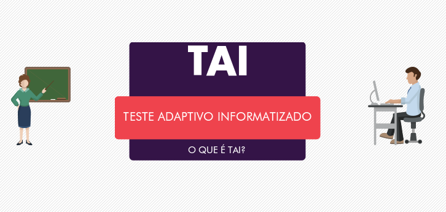
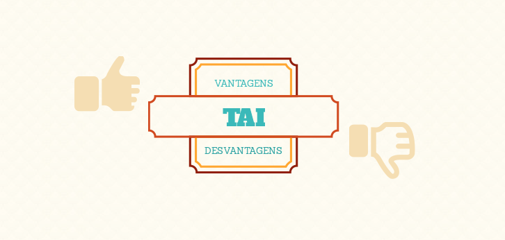

A incorporação da tecnologia à avaliação por meio de testes informatizados tem se mostrado muito útil, pois permite, por
exemplo, o uso de recursos multimídia e facilita o envolvimento de procedimentos e cálculos estatísticos em seus resultados,
com isso, os estudos relacionados a estes testes tem crescido, incorporando inclusive, conhecimentos psicológicos, o que possibilitou o surgimento dos
Testes Adaptivos Informatizados (TAI).

Figura 1 - TAI - Teste Adaptivo Informatizado
O TAI é um tipo de criação de questionários baseados no conhecimento prévio do aluno, utilizando teorias para medir a habilidade do aprendiz
e selecionar questões de acordo com o seu nível de conhecimento. Assim, busca-se a realização de um teste ótimo para pessoas
diferentes, onde o conhecimento de cada indivíduo é estimado a cada nova questão respondida.
Elementos básicos de um TAI
Segundo Conejo (2001) os TAIs são compostos por alguns elementos básicos:
Modelo de Resposta ao Item:
Esse modelo descreve como o aluno responde ao item, segundo seu nível de conhecimento. Quando se faz a medida do
nível de conhecimento, espera-se que o resultado obtido não dependa do instrumento usado, como por exemplo, do computador ou do lápis e papel.
Banco de Itens:
É um dos elementos fundamentais para a criação de um TAI, o qual define um banco de questões
que deve abranger parte ou todo o domínio do conhecimento abordado pelo teste. Uma vez especificado o conteúdo do teste, o Banco de Itens
deve ser composto por itens que tratem de tal conteúdo.
Nível de Conhecimento Inicial:
Deve-se escolher de forma adequada o nível de dificuldade da primeira questão,
para possibilitar uma sensível redução do tempo de teste, uma vez que as primeiras questões são determinantes
para calcular a estimativa de habilidade e para que a mesma seja baseada em cálculos e não em previsões.
Método de Seleção dos Itens:
Um TAI seleciona o item seguinte que será apresentado, em cada momento, em função
do nível estimado do conhecimento do aluno e da resposta do item previamente ministrado. Selecionar o melhor item pode melhorar a precisão
na estimativa desse nível, e com isso, reduzir o tempo de teste.
Critério de Parada:
É o término do teste. Pode-se utilizar diferentes critérios de parada, tais como o alcance de
um nível pré-estabelecido de habilidade, quantidade máxima de itens em um teste, tempo de teste, entre outros.

Figura 2 - Vantages e desvantagens do TAI
Principais vantagens e desvantagens do uso do TAI
Segundo Gonçalves (2004), as principais vantagens de uso da TAI são:
- Cada estudante que responder um teste, terá um teste único, ou seja, este teste foi especialmente desenvolvido para ele e provavelmente
nenhum outro teste terá as mesmas questões. Pode acontecer de algumas questões serem iguais, mas o teste será individualizado
de acordo com o conhecimento do examinado.
- Testes Adaptativos tendem a ser menores, uma vez que foi descoberta a habilidade do aluno e ela tende a ter pouca variância, o teste está
encerrado. Isto pode acontecer com poucas questões, resolvendo um grande problema psicológico que ronda diversos estudantes, que
normalmente desistem de testes longos e cansativos que precisam de muita leitura.
- Com poucas questões pode-se obter um alto nível de precisão na avaliação.
- O TAI baseado na TRI mostra-se como possível solução para instituições com um pequeno banco de itens, que desejem
obter a maior informação quanto à proficiência do estudante em determinado domínio do conhecimento.
Tamém segundo Gonçalves (2004), a TAI também tem algumas desvantagens:
- Requer cuidados na calibração e na elaboração do banco de itens a serem usados no processamento e indicação
aos seus estudantes (indivíduos examinados pelo teste proposto).
- A TRI possui métodos estatísticos que são, na área computacional, custosos e trabalhosos.
- Os algoritmos devem estar bem implementados.
Principais modelos de Testes Adaptativos
Binet Test
Trata-se de um teste de inteligência baseado em níveis de dificuldade, criado por Alfred Binet. Esse teste foi
desenvolvido para o diagnóstico do nível de inteligência de uma criança em comparação com sua idade
cronológica, analisando a idade mental. As questões são classificadas segundo níveis, e se todos os itens de um
determinado nível forem respondidos corretamente são fornecidos itens de um nível mais alto
até que todos eles sejam respondidos corretamente (Nível Superior); Caso contrário, se todos os itens de um certo nível
forem respondidos incorretamente, são disponibilizados itens de um nível mais baixo até que todos eles sejam respondidos corretamente (Nível Inferior).
Quando o nível superior e o Nível Inferior são identificados, termina o teste.
Teste Adaptativo Estratificado
É uma melhoria do Binet Test, sendo diferenciado pela eleição de um próximo item
logo após cada um ser respondido. Quando o aluno responde corretamente uma questão, a próxima é de uma dificuldade maior.
Por outro lado, quando o aluno responder incorretamente uma questão, a próxima questão é de uma dificuldade menor.
Teste Adaptativo Baseado na Teoria de Resposta ao Item
Usa de fórmulas estatísticas para realizar diversos cálculos que
ajuda a TAI a ter maior conhecimento sobre o aluno e suas variâncias no teste.
Estes são alguns dos principais modelos de Testes Adaptativos, porém existem outros tipos de TAI, como por exemplo, o Teste Adaptativo de Dois
Estágios.